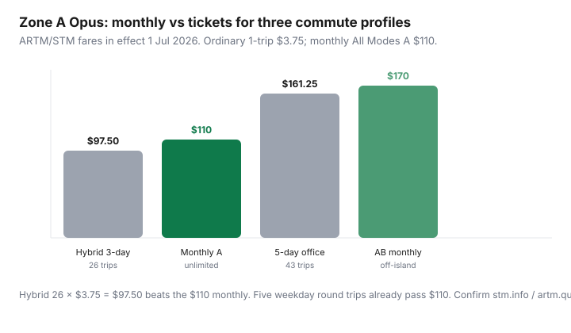

Transportation · Canada
How to pick the right Opus fare product in Montréal (STM, RTL, STL, exo)
Greater Montréal riders treat Opus like Toronto PRESTO: one card, one “monthly,” done. That is how you overpay. STM, RTL, STL, and exo sit on the ARTM zone map (A island / B Longueuil–Laval / C–D couronnes). A Zone A monthly is not a South Shore commute. A photo Opus is not optional if you want reduced fare. This is the Opus card monthly pass Montréal STM break-even — hybrid office weeks included — not a leftover STM screenshot from 2019.
Pair it with the Canada-wide pass calculator, Montréal car-lite stacks, and Communauto vs owning when a zone upgrade is really a car-share day.
Key takeaways
- ARTM fares in effect 1 Jul 2026: ordinary All Modes A 1-trip $3.75, 10-trip $35 ($3.50/ride), weekly $33.25, monthly $110 (reduced $66).
- Break-even vs 1-trip: $110 ÷ $3.75 ≈ 29.3 paid trips. Hybrid 3-day office (≈26 trips) usually stays on 10-trip booklets. Five-day island commuters buy the monthly.
- Off-island: All Modes AB monthly $170, ABC $206, ABCD $281 (ordinary). Do not load Zone A and “hope” RTL/STL/exo taps work.
- Reduced fare needs a photo OPUS ($15 for 12–17, students 18+, seniors 65+). Montréal agglomeration residents 65+ can ride Zone A free on the Gratuité 65+ title.
- A Communauto day can beat buying AB/ABC “just in case” for two suburban Saturdays. Confirm live tariffs at stm.info and artm.quebec — French and English PDFs both date 1 Jul 2026.
Opus basics: photo ID, recharge points, and fare products
Two physical cards, one mental model:
- Standard OPUS (no photo): $6, must be loaded with a fare. Ordinary (adult) products only.
- Photo OPUS: $6 for ages 6–11; $15 for 12–17, students 18+, and seniors 65+. Required for reduced 6–17, student 18+, and senior reduced. STM’s 1 Jul 2026 schedule is blunt about this.
Load at métro agents (before the 20th if you want next month early), automatic fare vending machines, pharmacies and dépanneurs in the ARTM network, and the Chrono / operator apps where offered. Monthly All Modes A is sold from the 20th of the previous month in the regular network; earlier only at a station agent. The title is valid from the 1st through the last day of the calendar month — not “30 days from first tap.”
Children 5 and under ride free. Ages 6–11 can, in some STM cases, pay a 1-trip All Modes A at a métro booth or cash on the bus without a photo card — confirm the current STM note before you send a kid alone. Do not invent PRESTO-style open-loop debit as a reduced-fare path. Contactless bank cards, where accepted, are ordinary adult math.
Product names matter: “Tous modes / All Modes” is bus + métro + exo train + REM in the zones you bought, including the STM 747 airport shuttle on the listed All Modes titles. A bus-only leftover from a decade ago is not this schedule. Zone A is the agglomeration of Montréal — not “I changed at Bonaventure so I am still Zone A” if you boarded in Longueuil.
Monthly vs weekly vs occasional tickets for hybrid work
Count paid trips, not calendar weekdays. A métro + bus transfer on the same All Modes title is still one validation of that title. Hybrid means office days only.
| Product | Ordinary | Reduced (photo OPUS) | Break-even vs $3.75 |
|---|---|---|---|
| 1-trip All Modes A | $3.75 | $2.75 | — |
| 10-trip All Modes A | $35.00 ($3.50) | $23.50 | Always cheaper than singles |
| Weekly All Modes A | $33.25 | $20.00 | ≈9 singles that Monday–Sunday |
| Monthly All Modes A | $110.00 | $66.00 | ≈29.3 singles / 31.4 ten-trip rides |
| 24-hour / 3-day | $11.25 / $21.75 | — | Visitors, not commuters |
Hybrid 3 office days, two paid trips a day, 4.3 weeks ≈ 26 trips. At $3.50 on the 10-trip: $91. Monthly $110 loses. Add two weekend errands (4 trips) → 30 trips ≈ $105 — still a coin-flip versus $110, and you keep leftovers on the booklet next month. Five-day office: 5 × 2 × 4.3 ≈ 43 trips × $3.50 = $150.50 vs $110. Buy the monthly. Weekly $33.25 is for a conference week or a visitor, not a standing commute — four weeklies are $133.
Multi-agency reality: STM plus South Shore / Laval / exo zones
RTL (Longueuil), STL (Laval), exo trains, and the REM are not “transfers that PRESTO would forgive.” They are zone letters on the ARTM grid.
- Zone A: agglomeration of Montréal (STM + REM/exo that stay in A).
- AB: add Longueuil agglomeration and Laval. Monthly ordinary $170 / reduced $102.
- ABC: northern and southern couronnes. Monthly ordinary $206 / reduced $123.50.
- ABCD: the full metropolitan title. Monthly ordinary $281 / reduced $168.50.
A 1-trip All Modes AB is not $3.75. Do not load ten Zone A trips and tap in Brossard. If you work downtown five days and sleep in Zone B, the AB monthly is the product — unless hybrid 3-day AB singles still undercut $170. Price the actual AB 1-trip on the live ARTM table the week you load; then $170 ÷ that fare is your trip count. If you only cross to B twice a month, stay on Zone A monthly plus two AB singles or a car-share day — do not “upgrade the whole month.”
Designated All Modes AB / ABCD Opus cards exist for some multi-zone titles. If a machine refuses your standard card for a title, that is a card-type problem, not a broken tap.
Student and senior reduced fares—eligibility checklist
- Get the photo OPUS at a point that issues photos (STM agents and listed partners). Bring proof of age or student status as the operator lists that week.
- Students 18+: reduced monthly All Modes A is $66; 4-month All Modes A is $251 consecutive. $251 ÷ 4 = $62.75 — cheaper than three $66 months if you ride all four.
- Seniors 65+ who live in the Montréal agglomeration: ask for Gratuité 65+, All Modes A (free in Zone A). Non-residents 65+ use reduced ($66 monthly A) with photo OPUS.
- Youth 6–17: reduced column on the same table ($66 monthly A). Photo OPUS required for the reduced monthly/10-trip path.
- Employer or university “unlimited” products: take them. Do not also Autoload a personal monthly.
Reduced 1-trip A is $2.75. Monthly $66 ÷ $2.75 ≈ 24 trips. Reduced riders hit the monthly faster than ordinary riders. Hybrid students still check: 26 × $2.75 = $71.50 vs $66 — the monthly usually wins even on 3-day office if they also ride evenings.
Break-even calculator for 3 commute profiles

| Profile | Paid trips | 10-trip $ | Monthly | Buy |
|---|---|---|---|---|
| Plateau hybrid (Zone A, 3 office days) | 26 | $91 | $110 | 10-trip |
| Centre-ville five-day (Zone A) | 43 | $150.50 | $110 | Monthly A |
| Longueuil five-day (AB) | 43 | Price live AB 10-trip | $170 | Usually AB monthly |
If you take one two-week trip, that month’s monthly is a sunk $110. Hybrid people should not Autoload monthly “for simplicity.” Load 10-trip, then buy a monthly only after two real months over ~32 Zone A trips.
When a car-share day pass beats an extra zone upgrade
Buying All Modes ABC for two IKEA-and-parents Saturdays is how $206 appears on a Zone A life. Price the alternative: stay on Zone A monthly or 10-trip, then one Communauto station/FLEX day. The Toronto Value Extra cousin in our car-share guide is $30 + a cheap day cap — use the Montréal PDF, not that number. Even a $40–$70 car-share Saturday plus $110 Zone A ($150–$180) can beat $206 ABC if you only leave the island twice. Two ABC singles may be cheaper still. Upgrade the title when the weekday commute needs the zone, not the errand.
REM to the airport is on All Modes A (747 / All Modes note on the STM page). Do not buy a surprise airport product if your monthly already lists the 747.
French and English resources to verify current tariffs
Fares move. The 1 Jul 2026 PDFs are the ones this page used (reviewed 20 Sep 2026):
- ARTM fare schedule (English PDF and artm.quebec/en/fare-schedule) — zone map + All Modes A/AB/ABC/ABCD.
- STM English “a-tarifs2026.pdf” and French tarifs2026.pdf — same numbers, card prices, 65+ free note.
- Operator pages: stm.info/en/info/fares, rtl-longueuil.qc.ca, stlaval.ca, exo.quebec/en/trip-planner/fares.
- Chrono app for next-month load windows. Station agents for photo cards and early monthly sales.
If French and English PDFs ever disagree, treat the ARTM grille tarifaire as the source of truth and ask an agent. Do not use a Toronto 47-trip cap story on Opus. Montréal does not cap ordinary adult trips at 47. You either prepay a title or you pay per validation.
Sources & date stamps
- ARTM, Public transit fare schedule in effect 1 Jul 2026 (PDF update 30 Jun 2026) — All Modes A/AB/ABC/ABCD monthlies $110 / $170 / $206 / $281 ordinary.
- STM fare schedule effective 1 Jul 2026 (a-tarifs2026.pdf), reviewed 20 Sep 2026 — 1-trip $3.75, 10-trip $35, weekly $33.25, monthly $110 / reduced $66, OPUS card prices, Gratuité 65+.
- STM, Mensuel Tous modes A product page — validity 1st–last day; sale from the 20th; 747 / REM / train in Zone A.
- exo.quebec fares and ARTM zone maps for RTL/STL/exo stacking. Confirm before you load a multi-zone title.
Frequently asked questions
When does an Opus monthly pass beat tickets in Montréal?
On Zone A ordinary fares (1 Jul 2026), $110 ÷ $3.75 ≈ 29 paid trips, or about 32 rides if you already buy 10-trip booklets at $3.50. Hybrid 3-day office weeks usually stay on 10-trip. Five-day island commuters buy the monthly.
Does a Zone A monthly cover RTL, STL, or exo?
Only travel that stays in Zone A. Longueuil and Laval need All Modes AB ($170 ordinary monthly). Outer couronnes need ABC or ABCD. Check the ARTM zone of your home stop, not the downtown station you exit.
Do I need a photo OPUS for the adult monthly?
No. Ordinary All Modes titles load on a standard $6 OPUS. Photo OPUS is required for reduced 6–17, student 18+, and senior reduced fares. Montréal-agglomeration residents 65+ should ask about free Zone A.
Is there TTC-style fare capping on STM?
No. Montréal still sells classic titles (1-trip, 10-trip, weekly, monthly). There is no 47-trip adult cap. Do not copy Toronto PRESTO habits onto Opus.
Should I buy AB monthly for two suburban Saturdays?
Usually no. Price two AB singles or a Communauto day on top of Zone A. Upgrade the monthly when the weekday commute needs the extra zone.